Nicol León Arge is a bilingual English-Spanish reporter for the Tri-City Herald, a McClatchy local newspaper in Eastern Washington. She primarily covers Pasco reporting on Latino and immigrant residents, city council meetings, local government, economic development, transportation and other issues shaping the city.
Her work has appeared in The New York Times, Gothamist/WNYC Radio, Documented NY, The Arizona Republic, El País US/América, Palabra NAHJ, among other outlets. She previously worked as a reporter in Peru covering politics, human rights and social issues.
She sees journalism as a counterbalance to power. She focuses on getting information that is essential for the public so people can better understand their rights and the systems that shape their lives.
She earned a Master's in Bilingual Journalism from the Craig Newmark Graduate School of Journalism at CUNY with a specialization in Data Journalism.
She likes drawing, playing Age of Empires II or riding her bike.
History of Latino voter discrimination puts Pasco under new election rules
Pasco's history of allegations that it tried to affect the Latino vote has put the city under Washington state's scrutiny.
Devastating earthquakes leave Tri-City Venezuelans reeling. How they plan to help
Venezuelans in the Pacific Northwest began collecting donations for earthquake victims one day after the quake killed thousands in La Guaira, Caracas
Day after graduating, this Tri-Cities teen flew to Mexico to play pro soccer
Chiawana High School graduate Lindsay Sanchez plays for the Cruz Azul soccer club in Mexico City.
Packed crowd begs Pasco to save 2 troubled shelter dogs from euthanasia
Dozens of dog advocates filled every seat in the Pasco City Council chambers Monday night, wearing shirts that read “Animal Lives Matter,” as they urged council members to prevent the euthanasia of Russ and Stan.
Former crime-plagued motel site for sale. Can it help revive Pasco downtown?
As part of its effort to breathe new life into downtown Pasco, the city is putting three city-owned properties up for sale, including a site long known as a hotspot for prostitution, drug overdoses and other criminal activity.
Pasco offers $13M and +100-year-old park to own Road 68 ballfields
The Pasco City Council decided to offer Franklin County $13 million to own the large soccer and softball complex surrounding Gesa Stadium. As part of the deal, it’s also offering to give up Volunteer Park.
City still $3.6M short to make crossing Hwy 395 safer for bikes, pedestrians
Pasco pedestrians and cyclists will need to keep waiting for a safer way to cross Highway 395 on Sylvester Street.
Long before the World Cup, soccer brought Tri-City Latino immigrants together
Liga 1020 connects Latino immigrant families and builds community through soccer.
Scammers targeting Spanish-speakers injured at work. WA issues warning
Scammers are targeting Spanish-speakers injured at work across the Pacific Northwest, according to the Washington State Office of the Attorney General.
WA law could limit a push for tougher sex offender housing rules in Pasco
Pasco leaders are pushing to introduce regulations designed to prevent housing for “sexually violent predators” from being located near families.
Councilman censured. He’s accused of leaks and mistreating employees
Pasco Councilman Leo Perales was unanimously censured for violating city and state rules, as well as the council’s ethics code.
These are the finalists for Pasco’s next police chief. When you can meet them
The city has been narrowing the field from the initial group of 16 applicants who were selected in the first round of a national search led by Bob Murray & Associates.
1 Person Killed and Dozens of Firefighters Injured in Staten Island Blasts
Two explosions rocked a barge on the North Shore of Staten Island, injuring 34 firefighters and emergency medical workers.
Cuidadoras en Nueva York en huelga de hambre: Piden que se apruebe ley que prohíbe los turnos de 24 horas
Decenas de cuidadoras en el hogar anunciaron el inicio de una huelga de hambre afuera del Concejo de la Ciudad de Nueva York. Las trabajadoras exigen que se apruebe el proyecto de ley contra los turnos de 24 horas de trabajo, también conocido como “No más 24”.
Precio de gasolina asfixia a trabajadoras de limpieza: "Siento que ya no es negocio"
El alza del precio de la gasolina está reduciendo los ingresos de trabajadoras de limpieza en EE.UU.
In Harlem, Know-Your-Rights Volunteers Go Door to Door Before ICE Comes Knocking
Indivisible Harlem volunteers are helping educate local businesses on how to respond if ICE agents arrive.
Peruvian Designer Reclaims the Runway for Trans Migrants
Peruvian fashion designer Yoella Cubas uses her upcycled designs to celebrate identity and environmental sustainability.
A pesar de la alta demanda de cuidadoras, múltiples obstáculos impiden a mujeres inmigrantes acceder a estos empleos
Aunque hay alta demanda de cuidadoras en Nueva York, mujeres solicitantes de asilo enfrentan barreras para acceder a empleos estables.
'I Wanted Him Gone – But Not Like This': Venezuelans in New York React to Maduro's Capture
Joy, relief, fear, and doubt ripple through New York's Venezuelan community.
Guía práctica para obtener consultas gratis con abogados de inmigración en Nueva York
El aumento de cambios en políticas federales ha hecho que más inmigrantes busquen asesoría legal en Nueva York.
Asylum Seekers Navigate Immigration Courts Alone as Promised Legal Aid Falls Short
In New York City, migrants and asylum seekers risk deportation as they struggle to find representation in an overwhelmed legal-aid system.
Queens DA: Man stabbed on E train after scolding rider over loud phone call
A 50-year-old Brooklyn man has been charged with attempted murder over the altercation.
Help with NY residents' energy bills finally coming in December, after shutdown delays
Here's how you can get help avoiding a utility shutoff or getting your power back on.
A last-ditch move in NYC Council to ban carriage horses fails
Councilmember Robert Holden was hoping to make carriage horses history in his final weeks in office.
Holiday Open Street returning to NYC's Fifth Avenue for just 1 Sunday
The event was scaled back to a single weekend in 2024 and will repeat that schedule this year.
The Rockefeller Center Christmas tree will be set up Saturday: How to see it
The 75-feet-tall Norway Spruce is headed for NYC this week.
55,000 runners will hit streets for the NYC Marathon Sunday — drivers beware
The race wraps up at 10 p.m. Until then, the NYPD will be closing roads and bridges as needed.
NYC's Village Halloween Parade steps off Friday night: What to know
If you've got a costume, you've got a spot. But be ready for crowds.
Paw-rade perfection: The Tompkins Square Halloween Dog Parade is back this weekend
Now in its 35th year, the costumed canine celebration in the East Village features adoptable dogs, treats and a fierce costume competition.
Migrants staying at Row Hotel shelter in Midtown begin receiving notices to relocate
The makeshift housing became an early flashpoint in the migrant crisis that started three years ago.
DACA students in Arizona face college disruption amid Trump’s mass deportation push
Deferred action for Childhood Arrivals recipients talk to The Arizona Republic about their fears under the Trump administration.
Menores migrantes no acompañados enfrentan nuevas tarifas bajo la 'Ley Grande y Hermosa'
La ley incluye disposiciones para reforzar el Sistema de asilo estadounidense, lo que, según defensores, dificultará la solicitud de asilo.
New fees in One Big Beautiful Bill to have big impact on unaccompanied migrant minors
The law includes provisions to tighten the U.S. asylum system, which advocates say will make it more difficult for people fleeing persecution.
Unaccompanied migrant minors in AZ face court alone with legal funds in doubt
Many migrants minors are without legal representation in Arizona immigration courts, after federal funding was cut by Trump administration.
Unaccompanied migrant minors face growing hurdles from Trump administration crackdown
Immigrant children who crossed the border withour parent or guardian are increasingly in the crosshairs of the Trump administration.
Migrant deaths have plummeted in Arizona, once one of the deadliest routes into US
The decrease in migrant deaths corresponds to a huge drop in illegal border crossings after the Trump administration shut down asylum at the border.
Encuesta: ¿Cuántas familias latinas apoyan deportaciones masivas de Trump?
Nueva encuesta preguntó a latinos en Arizona y EE.UU. su opinión de las deportaciones masivas de inmigrantes por parte de Trump y temas relacionados.
How many Latino families support Trump's mass deportations? What a new poll says
A new poll asked Latinos in Arizona and around the United States about their views on Trumps' mass deportations of immigrants and related issues.
Esto es lo que debe saber sobre los arrestos de inmigrantes por parte del ICE en Arizona
El Servicio de Inmigración y Control de Aduanas de EE.UU. está utilizando diferentes tácticas para arrestar personas en Arizona. Lo que debe saber.
Here's what to know about ICE immigrant arrests in Arizona
U.S. Immigration and Customs Enforcement is using different tactics to arrest people in Arizona. Here's what you need to know.
Cónsul de México en Phoenix pide a mexicanos no acudir a protestas el 14 de junio
Cónsul de México en Phoenix pide que mexicanos indocumentados no vayan a protestas contra redadas anti-inmigración.
Mexican consul in Phoenix urges Mexican nationals to avoid 'No Kings' protests
Despite organizers saying the Arizona protests will be peaceful, the consul warned against participation, especially for those without legal status.
Unaccompanied immigrant minors face growing hurdles from the Trump administration crackdown
Many children are having to defend their cases alone before immigration judges, without lawyers, while the government has made it harder for them to leave the shelter system and reunite with their families
Los menores inmigrantes no acompañados se enfrentan a crecientes obstáculos por la mano dura de la Administración Trump
Muchos niños defienden sus casos solos frente a jueces de inmigración, sin abogados, mientras que el Gobierno ha endurecido los procesos para dejarles salir del sistema de acogida y reunirse con sus familias
Alone in Court: The U.S. Government’s Crackdown on Unaccompanied Migrant Kids
Funding cuts, raids, and Kafkaesque courtrooms leave thousands of children defenseless. Advocates say it’s by design.
Los migrantes dedicados a la venta ambulante en Nueva York, acorralados entre el alcalde Adams y Trump
Más de la mitad de los neoyorquinos votaron a favor de que se refuerce la fiscalización de vendedores ambulantes sin licencias, permisos que el municipio no concede desde 2016.
Thousands of migrant mothers face closure of New York’s shelter hotels: ‘How much will it cost to rent a small place?’
Without the possibility of obtaining a work permit and fearing deportation, 35,000 families with children still live in the city’s shelters
Miles de madres migrantes se enfrentan al cierre de los hoteles refugio de Nueva York: “¿Cuánto costará alquilar una casita?"
Sin posibilidad de conseguir un permiso de trabajo y con miedo a la deportación, 35.000 familias con niños aún viven en los albergues de la ciudad
Lorena Kourousias, la psicóloga que busca sanar el trauma de la migración en madres latinas
La mexicana dirige Mixteca, una organización que ofrece sesiones de terapia grupal alternativa en Nueva York para sobrevivientes de violencia
Perú: El lento camino hacia la justicia para las víctimas del régimen de Dina Boluarte
En julio se reanudaron las protestas que exigen la renuncia de la presidenta del Perú. Durante estas manifestaciones se reportaron más personas heridas, que se suman a las miles contabilizadas entre diciembre de 2022 y marzo de 2023. El camino legal que se sigue para obtener justicia inició de forma improvisada y aún no se evidencian resultados.
Congreso insiste en aprobar ley que discrimina a personas migrantes
Buscan que arrendadores, antes de alquilar viviendas, exijan a extranjeros documentos que prueben que su situación migratoria es regular.
Poder Ejecutivo no informa desde hace cinco años cómo enfrenta la trata de personas
Ley los obliga a rendir cuentas cada año sobre sus avances en la lucha contra la trata de personas. Pero los últimos 17 ministros del Interior incumplieron con esta norma.
Condenados por terrorismo rehabilitados podrán postular a cargos públicos
Tribunal Constitucional sentenció que se vulneraron derechos cuando el Congreso decidió que no pueden participar en elecciones los condenados por terrorismo rehabilitados.
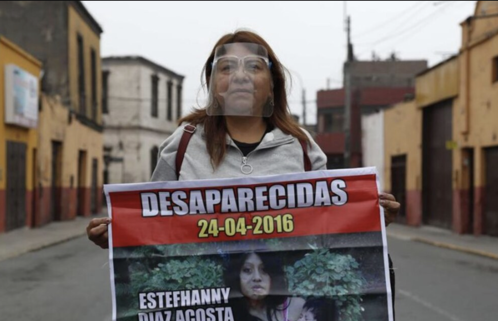
Las barreras que impiden acelerar la búsqueda de niñas y mujeres desaparecidas
Policías incumplen el protocolo para buscar a niñas y mujeres desaparecidas. No emiten rápidamente la nota de alerta. La norma deja en sus manos la activación de la Alerta de Emergencia, que moviliza a varias entidades para buscar a mujeres que sufrieron violencia antes de desaparecer.
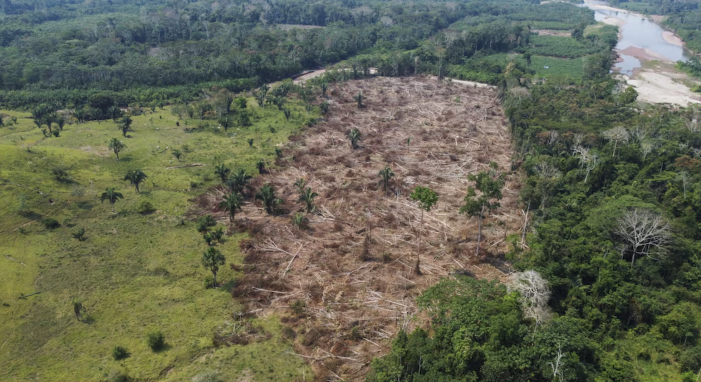
Congreso insiste en aprobar ley que fomenta deforestación en la Amazonía
El Poder Ejecutivo observó la propuesta porque busca que personas y empresas con tierras en la Amazonía realicen actividades agropecuarias sobre ellas, a pesar de que se trate de tierras forestales o de protección, necesarias para salvaguardar la biodiversidad y frenar los efectos del cambio climático. Sin embargo, la Comisión Agraria volvió a votar a favor del proyecto de ley del Bloque Magisterial.
Perú no podrá expulsar a personas migrantes que peligran en su país de origen
Tribunal Constitucional también sentenció que no se pida visa a las personas migrantes en situación de riesgo que quieran ingresar al Perú.
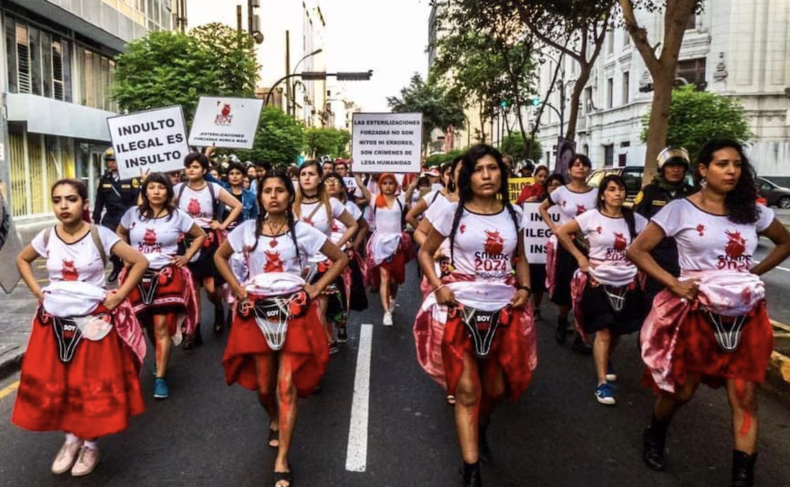
Poder Judicial ordena al Ministerio de Justicia que repare a víctimas de esterilizaciones forzadas
La cartera ministerial puede apelar el mandato. Representantes legales de las víctimas buscarán llegar a un acuerdo para que se cumpla la reparación integral
Niño queda desprotegido porque jueces niegan inscripción de sus mamás en DNI
El Poder Judicial dio la espalda a Dakarai, niño de 8 años, al decidir que en su Documento Nacional de Identidad (DNI) no figure el nombre de sus dos mamás. Así, impiden que acceda a varios de sus derechos humanos.
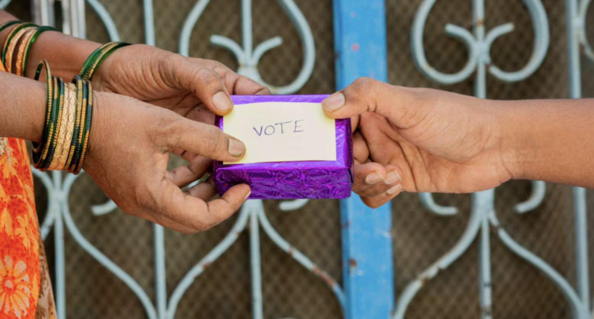
Elecciones 2022: 19 candidatos investigados por presunta entrega de dádivas
Jurados Electorales Especiales sancionaron a 4 aspirantes que ofrecieron desde polos deportivos hasta dinero en efectivo para obtener votos.
Peligran ordenanzas a favor de personas LGTBIQ+ por elección de virtual alcalde de Lima, Rafael López Aliaga
Dieciocho mujeres trans que laboran en la Municipalidad de Lima se quedarían sin trabajo. Podrían modificar al menos 5 ordenanzas que protegen a mujeres y personas LGTBIQ+.
UNI: vuelven a contratar a profesor investigado por hostigamiento sexual hacia alumna
Superintendencia Nacional de Educación Superior Universitaria (Sunedu) lo investiga porque habría tocado a estudiante. Rector de la Universidad Nacional de Ingeniería (UNI) se comprometió a prevenir estos casos, pero aceptó contratación de profesor denunciado.
Elecciones 2022: 40 candidatos sentenciados por violencia familiar obtienen mayor cantidad de votos
Son virtuales alcaldes y regidores a pesar de que los sentenciaron por violencia física y psicológica. Ancash es la región donde eligieron a mayor cantidad de sentenciados por agresiones contra mujeres e hijos.
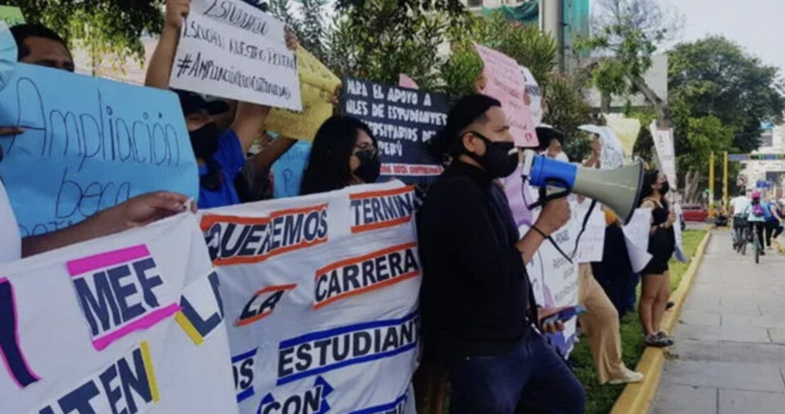
Pronabec redujo más de S/ 76 millones en presupuesto para dar Beca 18
Debido a un menor presupuesto, se podrían ver perjudicados hasta 400 mil jóvenes de pobreza y pobreza extrema que postulan a este programa.
Pedro Castillo y Keiko Fujimori no reportaron a la ONPE sus gastos en publicidad digital
Incongruencia. Gastaron al menos USD 16 mil en publicidad para Facebook, pero informaron a la Oficina Nacional de Procesos Electorales (ONPE) que sus gastos fueron de S/0, según informe de Hiperderecho.
Elecciones 2022: Empresas de candidatos a alcaldías de Lima deben a Sunat más de S/3 millones
Las empresas que más deben al Estado pertenecen a los candidatos de Avanza País, Podemos Perú y Alianza para el Progreso.
Migraciones entregó a mujer migrante carné de residencia pero vence en 6 meses
María de los Ángeles Campos podrá acceder a servicios de salud para atender 5 enfermedades solo hasta setiembre de este año. Luego, volverá a enfrentarse a limitaciones de Migraciones para renovar su calidad migratoria.
Mujer migrante lleva 35 años sin identidad ni acceso a servicios de salud
María de los Ángeles Campos pasó 35 años sin atención en salud desde que llegó al Perú. Hoy busca nacionalizarse para recibir tratamiento médico por la fibrosis pulmonar que padece. Pero Migraciones le coloca limitaciones. Al igual que ella, otras mujeres migrantes tienen restringido acceso a servicios de salud periódicos, alerta Defensoría del Pueblo.
Tres rostros que retratan los más de 231 mil casos de violencia contra la mujer en pandemia
Entre 2020 y octubre de 2021, los Centros de Emergencia Mujer atendieron 245 casos de feminicidio y 588 de intento de feminicidio. También registraron miles de denuncias por violencia psicológica, física y sexual.
Los pescadores que limpian petróleo del mar para sobrevivir
1,200 pescadores de Ancón llevan seis días sin trabajar, desde que Repsol contaminó las aguas y perjudicó los ingresos con los que sostienen a sus familias. Han sido contratados para labores de limpieza del petróleo a cambio de S/ 350 y sin implementos de seguridad por una empresa tercerizada. Ellos exigen una remuneración de la multinacional y atención del Estado.
Las veces que Susana Higuchi narró que fue torturada durante la dictadura de Fujimori
Keiko Fujimori llama “leyenda urbana” a las denuncias de maltrato que hizo su madre, pero fotografías corroboran que Higuchi sobrevivió a la violencia que ejerció su exesposo después del golpe de Estado de 1992.
Caso acoso sexual: Resolución fiscal desmiente versión de Lescano sobre mensajes a periodista
El candidato presidencial asegura que la Fiscalía archivó la denuncia en su contra porque se demostró que los chats fueron alterados. Sin embargo, el fiscal adjunto no concluye esto en la resolución que archiva el caso. Tampoco desmiente que Lescano envió los mensajes. En cambio, se basó en fundamentos machistas.
Víctimas de esterilizaciones forzadas advierten que cambio de fiscal atrasa alcance de sentencia
Fiscal Carmen Crisostomo estaba investigando más de 1250 denuncias desde 2017. Al removerla, ingresará un nuevo fiscal que desconoce los avances, señalan organizaciones.
Municipalidad de Lima lleva 89 días sin atender reclamos de sus obreros
500 trabajadores del municipio ganan S/ 4.50 por hora por lo que piden mejores condiciones laborales. Comuna limeña incumple Ley de negociación colectiva en el sector estatal al no reunirse con los obreros en el plazo establecido.
Alberto Fujimori declarará sobre asesinato contra periodista Melissa Alfaro
El próximo 23 de junio, el expresidente será interrogado por la Fiscalía en el marco de la investigación preliminar que le siguen por el presunto delito de homicidio calificado contra la periodista Melissa Alfaro.
Comisión del Congreso impide que Perú se sume a convención contra intolerancia y racismo
Fujimorista Bustamante recomendó a la Comisión de Relaciones Exteriores votar en contra de aprobar dos convenciones a las que el Perú estuvo adscrito desde 2013. Se sumaron a opiniones de organizaciones religiosas.
Caso Solsiret: Policía aún no detiene a condenados Brian Villanueva y Yolanda Castillo
Tienen orden de captura desde el 3 de junio, pero aún no los detienen. Fueron condenados por el delito de encubrimiento real del feminicidio cometido contra Solsiret Rodríguez.
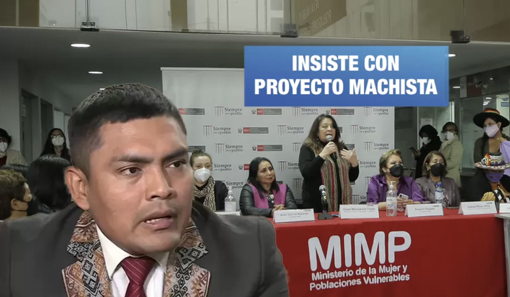
Congresista de Perú Libre se opone a retirar propuesta que cambia el nombre del Ministerio de la Mujer
Tras conversar con organizaciones defensoras de los derechos de las mujeres y personas LGTBIQ+, congresista Américo Gonza admitió que las mujeres sufren violencia, pero se negó a retirar su proyecto de ley de la agenda del Pleno.
Reglamento de ley sobre cáncer infantil ignora observaciones de padres de pacientes
Ley promete subsidio económico a cada trabajador que sea familiar de un niño con cáncer. Pero reglamento no especifica que los beneficiarios podrán ser personas que laboran de manera informal o independiente. Los más perjudicados son los menores que viven en condición de pobreza.
51 congresistas no informaron sus actividades en semanas de representación
Estado les paga viajes y viáticos, pero parlamentarios no informan sus labores. Uno de ellos es el fujimorista Juan Lizarzaburu, quien presentó proyecto de ley para que le paguen viajes al extranjero durante labor de representación. Su iniciativa ya fue aprobada en dos comisiones.
Virtuales congresistas de Keiko gastaron casi medio millón de soles en campañas
Cinco parlamentarios aportaron más dinero del que ganaron, según sus hojas de vida. Otros cuatro aún no informan a la ONPE quiénes los financiaron durante Elecciones 2021.
Fuerza Popular reutilizó vouchers para ingresar 30 pedidos de nulidad
No pagaron derecho a trámite. Tras verificar en página de Jurado Nacional de Elecciones, detectamos que personera legal solicitó nulidad de actas con comprobantes de pago que ya había presentado.
Proponen que líder de Con Mis Hijos No Te Metas presida Comisión de Educación
También conformarían la comisión otros cinco congresistas de Renovación Popular que no tienen experiencia en educación.
Empresarios que marchan por la vacancia deben más de S/ 22 millones al país
Dicen que buscan el ‘desarrollo’ del Perú, pero empresas de Erasmo Wong y Jorge Lazarte no cumplen con pagar deudas al Estado. Agroexportadora de Cristóbal Cillóniz afronta procesos sancionadores por no garantizar espacios seguros para sus trabajadores.
Castillo no anunció si observará proyectos de ley que ponen en riesgo derechos de mujeres
Son cinco proyectos de ley que congresistas ultraconservadores buscan aprobar, pese a que afectarían a niñas, adolescentes y mujeres. Antes, el mandatario no observó la ley que busca prevenir violencia hacia las mujeres desde las escuelas.
López Aliaga lleva al Congreso a candidato denunciado por violencia física y familiar
Su esposa, también candidata de Renovación Popular, lo acusó por violencia psicológica en 2019. Su expareja lo denunció por violencia física en 2013. Otros candidatos del mismo partido fueron investigados por maltrato físico, peculado, lesiones graves y hurto simple.
López Aliaga otorgó poderes a candidatos denunciados por violencia familiar
En una muestra de cercanía y confianza, el candidato presidencial de Renovación Popular otorgó facultades a los esposos y abogados Yorry Warthon y Katty Cachay para que su representación efectúan trámites legales, entre otros de reconocimiento de paternidad extramatrimonial.
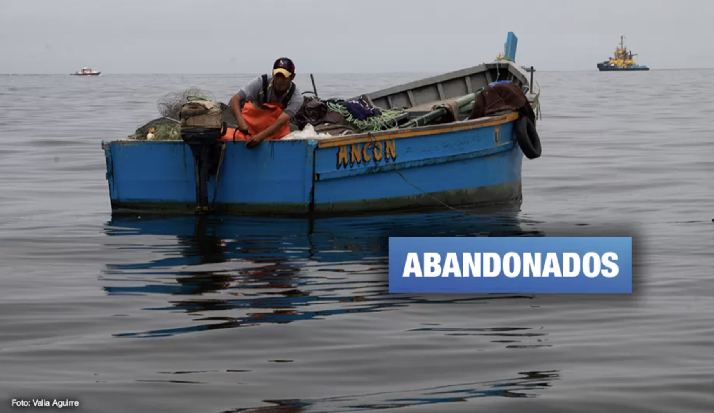
Repsol no pagaría indemnización a pescadores de Ancón hasta que Estado mida impacto ambiental
En reunión, administradores de Refinería La Pampilla S.A.A. respondieron a los pescadores de Ancón que no cumplirán con indemnización económica hasta que el Estado no emita un informe que indique el impacto ambiental del petróleo en las playas.
16 candidatos de FP denunciados por corrupción, violencia contra la mujer y otros delitos
Keiko Fujimori también lleva en su lista al Congreso a aspirantes que fueron acusados en distintas fiscalías por delitos como homicidio y tráfico ilícito de drogas.
Solo el 1% de leyes aprobadas por el Congreso en último quinquenio buscan igualdad de género
Cuando hubo mayoría fujimorista, parlamentarios dieron luz verde solo a tres proyectos de ley sobre igualdad de oportunidades para mujeres y hombres.
Municipio de Comas presenta controversial proyecto de ley para que serenos usen armas no letales
Pese a que su labor solo consiste en patrullar, municipalidad busca que serenos usen balas de goma y gas pimienta, lo que puede causar abuso de autoridad si no aplican capacitación adecuada, advierte Coordinadora Nacional de Derechos Humanos.
Congresistas siguen cometiendo irregularidades en proceso para elegir a Defensor del Pueblo
No quieren que ciudadanos tachen a los aspirantes a Defensor del Pueblo con cuestionamientos. Proceso suele tardar 6 meses, pero este Congreso lo hará en un mes.
Caso Solsiret: Hallan escondidos a condenados Brian Villanueva y Yolanda Castillo
Condenados por encubrir feminicidio contra Solsiret fueron encontrados escondidos en una casa. Habían permanecido inubicables durante 21 días.
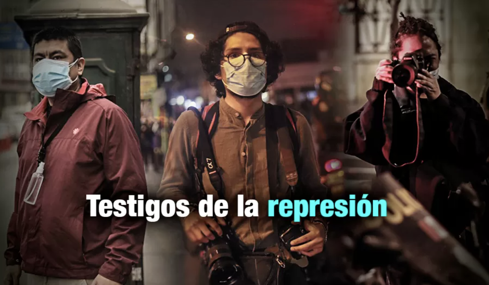
Imágenes en la memoria: Lo que vivieron los fotoperiodistas en las protestas contra Merino
Juan Mandamiento, Alonso Chero y Juan Zapata registraron las manifestaciones del 9 al 14 de noviembre de 2020. Sus fotografías son testimonios de la violencia policial que resistieron miles de jóvenes para que Manuel Merino abandone el poder que usurpó.
Derechos de mujeres y población LGTBIQ en peligro durante próximo quinquenio
Con Ejecutivo y Legislativo conservador, se eliminarían derechos sexuales y reproductivos de mujeres y disidencias. Otros 3 proyectos de ley que reconocen derechos de personas LGTBIQ no avanzarían.
Gestión de Muñoz generó pérdidas de más de S/ 26 mil a la Municipalidad de Lima
Muñoz culminará su gestión inmerso en dos actos ilícitos. Desde que ocupó el sillón municipal, se benefició a empresas con contrataciones de casi medio millón de soles y se contrataron a 15 personas de forma irregular.
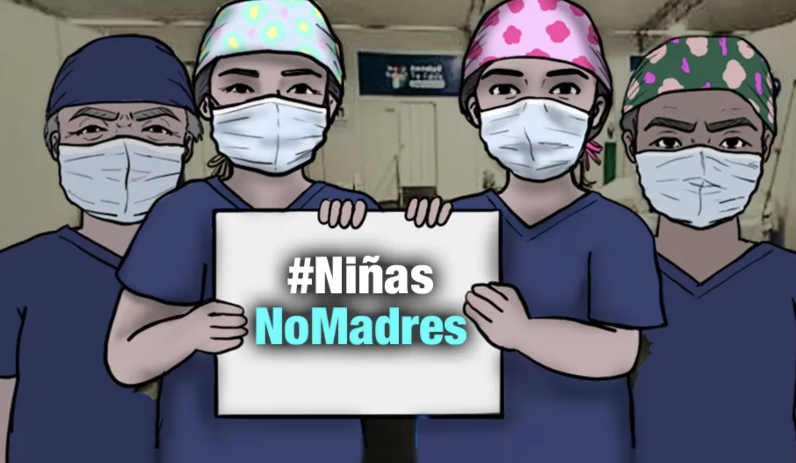
Hablan las médicas: Los obstáculos para interrumpir el embarazo forzado de niñas víctimas de violación
Niñas víctimas de violación en Perú son obligadas a continuar embarazos por barreras legales y falta de acceso al aborto terapéutico, enfrentando graves riesgos para su salud física y mental en un sistema que no logra protegerlas.
Bofedales en emergencia
En los últimos cinco años, con el pago de todos los limeños, Sedapal recaudó más de 50 millones de soles. Parte de este dinero debió usarlo desde 2020 para empezar a recuperar los bofedales de Milloc, una de las fuentes de agua para Lima durante las épocas de sequía. La pandemia y la demora en la ejecución han sumado para que este sistema se siga degradando, por estar también a merced de los ladrones de las turbas. ¿Podrá rescatarse en unos años lo que se depreda desde 1980?
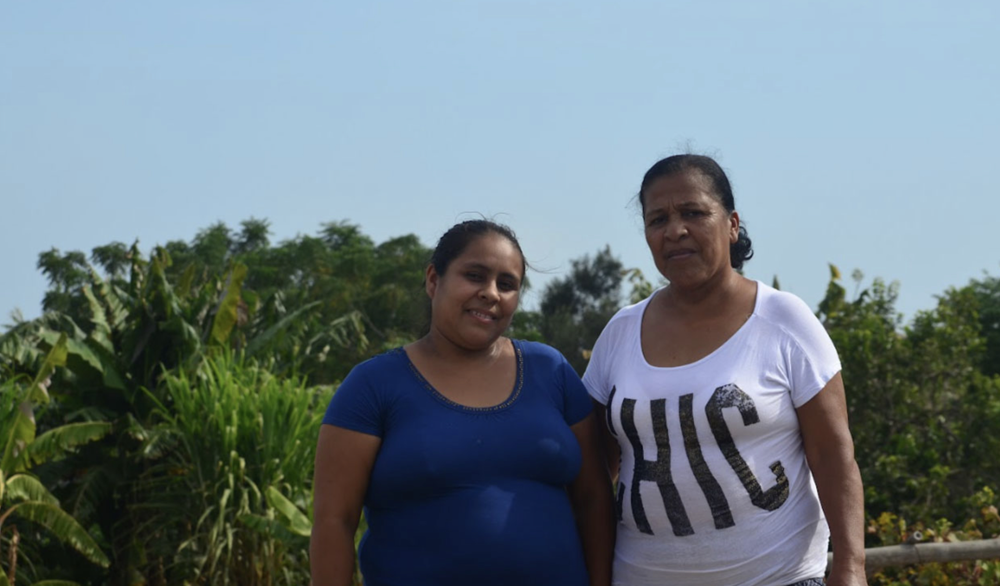
Mujeres afroperuanas son más vulnerables ante el cambio climático
Después del fenómeno El Niño Costero de 2017, las horas que Martha, Fiorella y Victoria le dedicaron a las tareas domésticas y de cuidado no remuneradas aumentaron. Ante desastres climáticos, el Estado aún no implementa medidas que alivien la carga de trabajo para ellas.
El drama de quienes tienen familiares en camas UCI
No hallan medicinas. El rocuronio y el midazolam se entregan en hospitales, pero no hay para todos los enfermos. Familiares gastan hasta S/ 2.800 en farmacias.
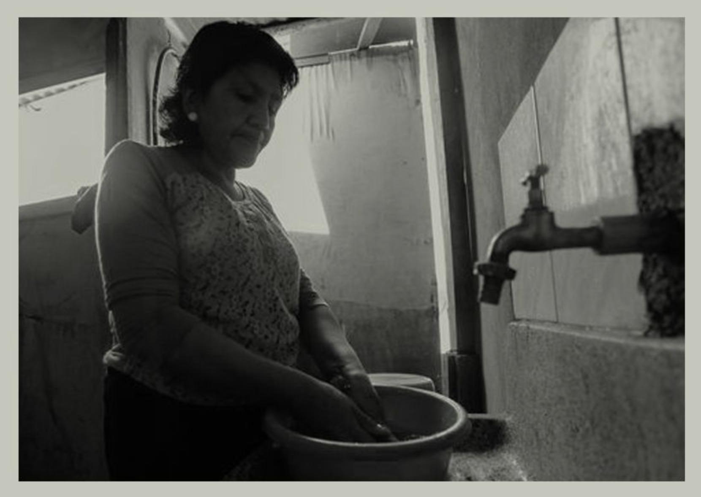
¿Quién cuida a las amas de casa durante la pandemia?
El coronavirus obliga a que las madres de familia le dediquen más tiempo a las labores domésticas y de cuidado. Si recibieran un pago por este trabajo, superarían el aporte de la minería, la industria que más dinero le deja al país. Pero nadie valora esta ocupación.
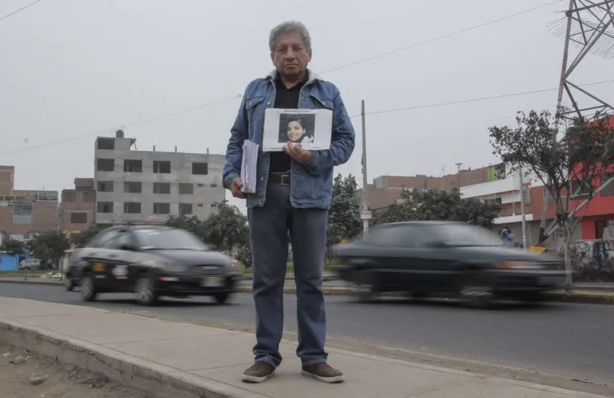
Una lucha sin Solsiret
Solsiret Rodríguez, la activista desaparecida hace tres años, es un símbolo en la marcha Ni Una Menos. Las mujeres salieron a las calles por cuarta vez: ¿qué reformas ha logrado el movimiento?
Crece el número de extranjeras víctimas de trata
Vulnerables e invisibles. Entre enero y setiembre de este año se rescató a 213 venezolanas, algunas de ellas menores de edad, que habían caído en manos de mafias de explotadores sexuales.
A 4 años de la desaparición de Solsiret: las deudas del Estado con las familias de las desaparecidas
Los padres de la activista feminista temen que el caso quede impune. Ellos piden prisión para toda la familia Villanueva Castillo, mientras el fiscal Mansilla continúa con las investigaciones para pedir condena contra los implicados.
Mujeres desaparecidas: alistan proyecto para fortalecer su búsqueda con geolocalización
Hasta el 14 de mayo, el Mininter reportó la ausencia de 4.252 mujeres. En el Congreso se busca exigir que las empresas de telefonía revelen en 24 horas desde dónde las llamaron sus posibles agresores.
Single mothers face steep income gaps as poverty persists across U.S. states
A state-by-state data visualization examining poverty, racial concentration and income shortfalls affecting families headed by single mothers.
Alone in Court: The U.S. Government’s Crackdown on Unaccompanied Migrant Kids
Funding cuts leave thousands of children defenseless.
Afrontar el duelo encerrados y sin respaldo del Estado
259 niñas, niños y adolescentes que quedaron en orfandad por feminicidios desde 2018 atravesaron la pandemia sin el subsidio estatal destinado a su atención. Sus tías y abuelas asumieron el cuidado mientras enfrentaban la paralización de los procesos judiciales.
Workers at Risk in NYC: Exposing Deadly Injuries at Companies
This search tool, based on an OSHA database, provides information about companies located in New York City where workers have suffered serious physical injuries resulting in hospitalizations and amputations.
After a Fire, Residents of One Bronx Building Have Waited Months For Repairs
After complaints about living conditions and then a fire, a court ordered the landlord to make repairs. Nine months later, tenants say the repairs have not been completed.
NYC: Street vendors face most fines and summons in Queens
Elmhurst, Jackson Heights, Jamaica and Corona are the areas where the most fines and court summons have been issued against street vendors since January 2022.
Artwork Title
Medium, year, or a short description.
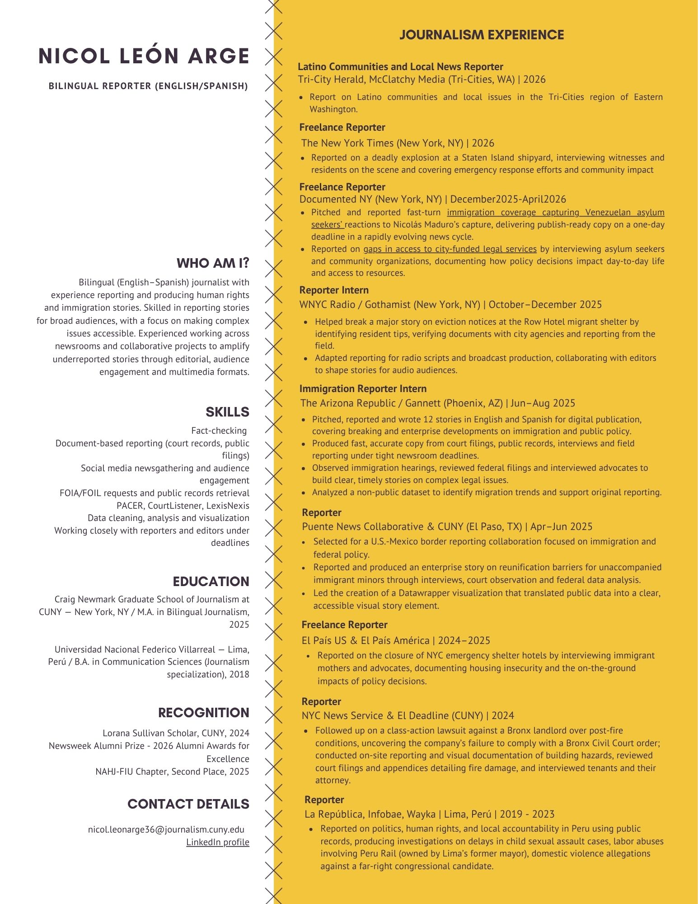